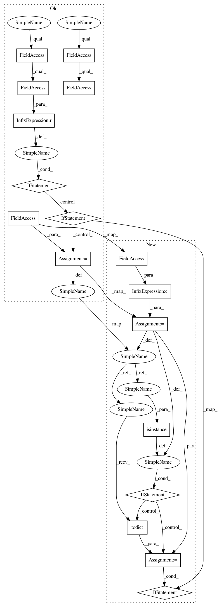

4419dbd0a344ea7bbe38926d53e8ab181f49d680,texar/modules/encoders/conv_encoders.py,Conv1DEncoder,_build_dense_hparams,#Conv1DEncoder#,166
Before Change
dense_size = _to_list(self._hparams.dense_size, "dense_size", ndense)
other_kwargs = {}
if self._hparams.other_dense_kwargs is not None:
if not isinstance(self._hparams.other_dense_kwargs, dict):
raise ValueError(
"hparams["other_dense_kwargs"] must be a dict.")
other_kwargs = self._hparams.other_dense_kwargs
dense_hparams = []
for i in range(ndense):
kwargs_i = {"units": dense_size[i],
"activation": self._hparams.dense_activation,
After Change
ndense = self._hparams.num_dense_layers
dense_size = _to_list(self._hparams.dense_size, "dense_size", ndense)
other_kwargs = self._hparams.other_dense_kwargs or {}
if isinstance(other_kwargs, HParams):
other_kwargs = other_kwargs.todict()
if not isinstance(other_kwargs, dict):
raise ValueError("hparams["other_dense_kwargs"] must be a dict.")
dense_hparams = []
for i in range(ndense):
kwargs_i = {"units": dense_size[i],
"activation": self._hparams.dense_activation,
In pattern: SUPERPATTERN
Frequency: 3
Non-data size: 17
Instances
Project Name: asyml/texar
Commit Name: 4419dbd0a344ea7bbe38926d53e8ab181f49d680
Time: 2018-04-01
Author: zhitinghu@gmail.com
File Name: texar/modules/encoders/conv_encoders.py
Class Name: Conv1DEncoder
Method Name: _build_dense_hparams
Project Name: asyml/texar
Commit Name: 4419dbd0a344ea7bbe38926d53e8ab181f49d680
Time: 2018-04-01
Author: zhitinghu@gmail.com
File Name: texar/modules/encoders/conv_encoders.py
Class Name: Conv1DEncoder
Method Name: _build_conv1d_hparams
Project Name: asyml/texar
Commit Name: 4419dbd0a344ea7bbe38926d53e8ab181f49d680
Time: 2018-04-01
Author: zhitinghu@gmail.com
File Name: texar/modules/encoders/conv_encoders.py
Class Name: Conv1DEncoder
Method Name: _build_pool_hparams